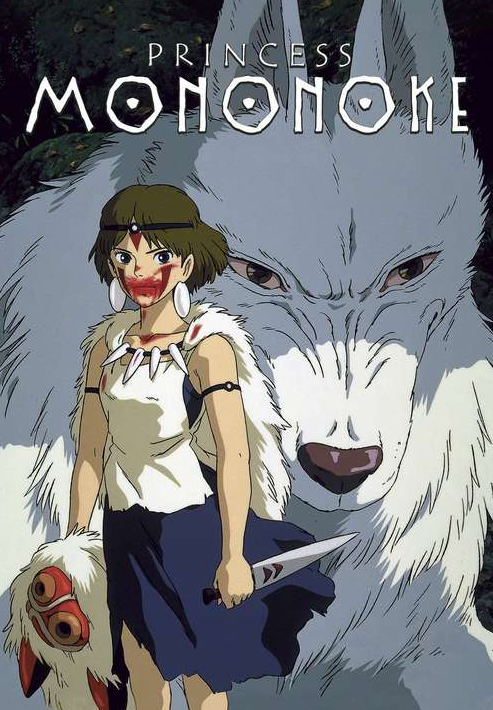
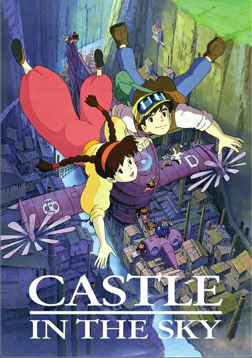

The Art of Miyazaki
Spirited Away (2001)
A young girl named Chihiro gets trapped in a mysterious and enchanting world of spirits and must navigate through a captivating and perilous adventure to save her parents and find her way back home.
Princess Mononoke (1997)
In a world filled with gods and mystical creatures, a young warrior named Ashitaka becomes embroiled in a conflict between nature and humanity when he meets the feral Princess Mononoke and tries to bring balance to the raging war.
The Wind Rises (2013)
Follow the remarkable journey of Jiro Horikoshi, a passionate aviation engineer in Japan, whose lifelong fascination with flight leads him to create iconic airplanes, including the A-6M World War II fighter plane.
My Neighbor Totoro (1988)
Two young sisters, Satsuki and Mei, move to the countryside and encounter friendly forest spirits, including the lovable Totoro, as they cope with their mother's illness and explore the magic hidden in the natural world around them.
Porco Rosso (1992)
Set in the interwar period, this animated tale follows an ex-fighter pilot who mysteriously transforms into a pig and becomes a daring bounty hunter, facing air pirates and other adversaries while searching for redemption and love.
Kiki's Delivery Service (1989)
A young witch named Kiki leaves home for a year of training and sets up a delivery service on her broomstick in a coastal town, making new friends and discovering her inner strength as she faces various challenges.
Lupin the Third: The Castle of Cagliostro (1979)
Master thief Lupin III and his partner Jigen find themselves embroiled in a thrilling adventure when they try to uncover the secrets of a counterfeit money operation while rescuing a damsel in distress in the enigmatic Cagliostro Castle.
Nausicaä of the Valley of the Wind (1984)
In a post-apocalyptic world, Princess Nausicaä strives to protect her peaceful valley from toxic spores and warring factions, seeking harmony between humanity and nature in a thought-provoking and visually stunning tale.
Castle in the Sky (1986)
A young boy and a mysterious girl with a magical crystal pendant embark on a high-flying adventure as they search for the mythical floating city of Laputa while facing airborne pirates and government agents.
Howl's Moving Castle (2004)
In a wondrous world of magic and conflict, Sophie, a young woman cursed to become old, encounters Howl's mysterious moving castle. Together, they embark on an enchanting journey of self-discovery, love, and adventure, unearthing secrets and finding hope amidst the ravages of war.